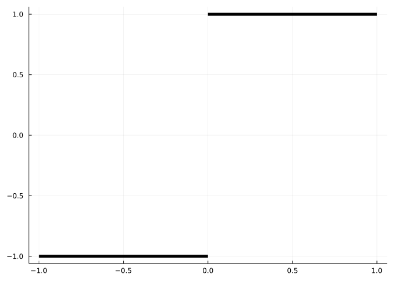
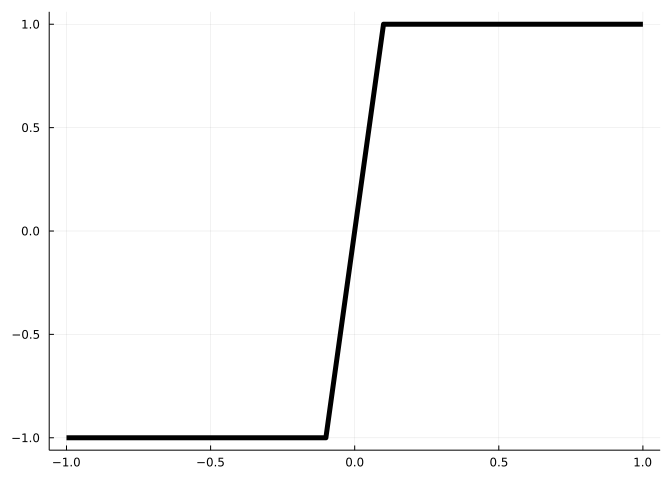
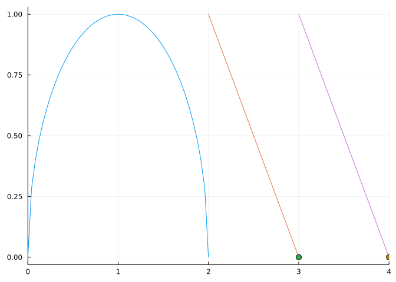
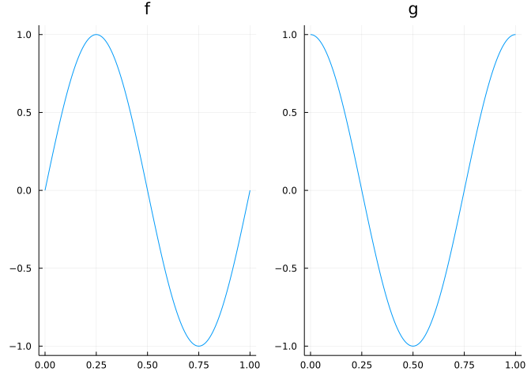

20 Continuity
This section uses these add-on packages:
using CalculusWithJulia
using Plots
using SymPyThe definition Google finds for continuous is forming an unbroken whole; without interruption.
The concept in calculus, as transferred to functions, is similar. Roughly speaking, a continuous function is one whose graph could be drawn without having to lift (or interrupt) the pencil drawing it.
Consider these two graphs:
and

Though similar at some level - they agree at nearly every value of \(x\) - the first has a “jump” from \(-1\) to \(1\) instead of the transition in the second one. The first is not continuous at \(0\) - a break is needed to draw it - where as the second is continuous.
A formal definition of continuity was a bit harder to come about. At first the concept was that for any \(y\) between any two values in the range for \(f(x)\), the function should take on the value \(y\) for some \(x\). Clearly this could distinguish the two graphs above, as one takes no values in \((-1,1)\), whereas the other - the continuous one - takes on all values in that range.
However, Cauchy defined continuity by \(f(x + \alpha) - f(x)\) being small whenever \(\alpha\) was small. This basically rules out “jumps” and proves more useful as a tool to describe continuity.
The modern definition simply pushes the details to the definition of the limit:
A function \(f(x)\) is continuous at \(x=c\) if \(\lim_{x \rightarrow c}f(x) = f(c)\).
This says three things
- The limit exists at \(c\).
- The function is defined at \(c\) (\(c\) is in the domain).
- The value of the limit is the same as \(f(c)\).
This speaks to continuity at a point, we can extend this to continuity over an interval \((a,b)\) by saying:
A function \(f(x)\) is continuous over \((a,b)\) if at each point \(c\) with \(a < c < b\), \(f(x)\) is continuous at \(c\).
Finally, as with limits, it can be convenient to speak of right continuity and left continuity at a point, where the limit in the defintion is replaced by a right or left limit, as appropriate.
Warning
The limit in the definition of continuity is the basic limit and not an extended sense where infinities are accounted for.
Examples of continuity
Most familiar functions are continuous everywhere.
- For example, a monomial function \(f(x) = ax^n\) for non-negative, integer \(n\) will be continuous. This is because the limit exists everywhere, the domain of \(f\) is all \(x\) and there are no jumps.
- Similarly, the basic trigonometric functions \(\sin(x)\), \(\cos(x)\) are continuous everywhere.
- So are the exponential functions \(f(x) = a^x, a > 0\).
- The hyperbolic sine (\((e^x - e^{-x})/2\)) and cosine (\((e^x + e^{-x})/2\)) are, as \(e^x\) is.
- The hyperbolic tangent is, as \(\cosh(x) > 0\) for all \(x\).
Some familiar functions are mostly continuous but not everywhere.
- For example, \(f(x) = \sqrt{x}\) is continuous on \((0,\infty)\) and right continuous at \(0\), but it is not defined for negative \(x\), so can’t possibly be continuous there.
- Similarly, \(f(x) = \log(x)\) is continuous on \((0,\infty)\), but it is not defined at \(x=0\), so is not right continuous at \(0\).
- The tangent function \(\tan(x) = \sin(x)/\cos(x)\) is continuous everywhere except the points \(x\) with \(\cos(x) = 0\) (\(\pi/2 + k\pi, k\) an integer).
- The hyperbolic co-tangent is not continuous at \(x=0\) – when \(\sinh\) is \(0\),
- The semicircle \(f(x) = \sqrt{1 - x^2}\) is continuous on \((-1, 1)\). It is not continuous at \(-1\) and \(1\), though it is right continuous at \(-1\) and left continuous at \(1\).
Examples of discontinuity
There are various reasons why a function may not be continuous.
- The function \(f(x) = \sin(x)/x\) has a limit at \(0\) but is not defined at \(0\), so is not continuous at \(0\). The function can be redefined to make it continuous.
- The function \(f(x) = 1/x\) is continuous everywhere except \(x=0\) where no limit exists.
- A rational function \(f(x) = p(x)/q(x)\) will be continuous everywhere except where \(q(x)=0\). (The function \(f\) may still have a limit where \(q\) is \(0\), should factors cancel, but \(f\) won’t be defined at such values.)
- The function
\[ f(x) = \begin{cases} -1 & x < 0 \\ 0 & x = 0 \\ 1 & x > 0 \end{cases} \]
is implemented by Julia’s sign function. It has a value at \(0\), but no limit at \(0\), so is not continuous at \(0\). Furthermore, the left and right limits exist at \(0\) but are not equal to \(f(0)\) so the function is not left or right continuous at \(0\). It is continuous everywhere except at \(x=0\).
- Similarly, the function defined by this graph
is not continuous at \(x=0\). It has a limit of \(0\) at \(0\), a function value \(f(0) =1/2\), but the limit and the function value are not equal.
- The
floorfunction, which rounds down to the nearest integer, is also not continuous at the integers, but is right continuous at the integers, as, for example, \(\lim_{x \rightarrow 0+} f(x) = f(0)\). This graph emphasizes the right continuity by placing a point for the value of the function when there is a jump:

- The function \(f(x) = 1/x^2\) is not continuous at \(x=0\): \(f(x)\) is not defined at \(x=0\) and \(f(x)\) has no limit at \(x=0\) (in the usual sense).
- On the Wikipedia page for continuity the example of Dirichlet’s function is given:
\[ f(x) = \begin{cases} 0 & \text{if } x \text{ is irrational,}\\ 1 & \text{if } x \text{ is rational.} \end{cases} \]
The limit for any \(c\) is discontinuous, as any interval about \(c\) will contain both rational and irrational numbers so the function will not take values in a small neighborhood around any potential \(L\).
Example
Let a function be defined by cases:
\[ f(x) = \begin{cases} 3x^2 + c & x \geq 0,\\ 2x-3 & x < 0. \end{cases} \]
What value of \(c\) will make \(f(x)\) a continuous function?
We note that for \(x < 0\) and for \(x > 0\) the function is a simple polynomial, so is continuous. At \(x=0\) to be continuous we need a limit to exists and be equal to \(f(0)\), which is \(c\). A limit exists if the left and right limits are equal. This means we need to solve for \(c\) to make the left and right limits equal. We do this next with a bit of overkill in this case:
@syms x c
ex1 = 3x^2 + c
ex2 = 2x-3
del = limit(ex1, x=>0, dir="+") - limit(ex2, x=>0, dir="-")
\[
c + 3
\]
We need to solve for \(c\) to make del zero:
solve(del, c)1-element Vector{Sym}:
-3This gives the value of \(c\).
20.1 Rules for continuity
As we’ve seen, functions can be combined in several ways. How do these relate with continuity?
Suppose \(f(x)\) and \(g(x)\) are both continuous on \(I\). Then
- The function \(h(x) = a f(x) + b g(x)\) is continuous on \(I\) for any real numbers \(a\) and \(b\);
- The function \(h(x) = f(x) \cdot g(x)\) is continuous on \(I\); and
- The function \(h(x) = f(x) / g(x)\) is continuous at all points \(c\) in \(I\) where \(g(c) \neq 0\).
- The function \(h(x) = f(g(x))\) is continuous at \(x=c\) if \(g(x)\) is continuous at \(c\) and \(f(x)\) is continuous at \(g(c)\).
So, continuity is preserved for all of the basic operations except when dividing by \(0\).
Examples
- Since a monomial \(f(x) = ax^n\) (\(n\) a non-negative integer) is continuous, by the first rule, any polynomial will be continuous.
- Since both \(f(x) = e^x\) and \(g(x)=\sin(x)\) are continuous everywhere, so will be \(h(x) = e^x \cdot \sin(x)\).
- Since \(f(x) = e^x\) is continuous everywhere and \(g(x) = -x\) is continuous everywhere, the composition \(h(x) = e^{-x}\) will be continuous everywhere.
- Since \(f(x) = x\) is continuous everywhere, the function \(h(x) = 1/x\) - a ratio of continuous functions - will be continuous everywhere except possibly at \(x=0\) (where it is not continuous).
- The function \(h(x) = e^{x\log(x)}\) will be continuous on \((0,\infty)\), the same domain that \(g(x) = x\log(x)\) is continuous. This function (also written as \(x^x\)) has a right limit at \(0\) (of \(1\)), but is not right continuous, as \(h(0)\) is not defined.
20.2 Questions
Question
Let \(f(x) = \sin(x)\) and \(g(x) = \cos(x)\). Which of these is not continuous everywhere?
\[ f+g,~ f-g,~ f\cdot g,~ f\circ g,~ f/g \]
Question
Let \(f(x) = \sin(x)\), \(g(x) = \sqrt{x}\).
When will \(f\circ g\) be continuous?
When will \(g \circ f\) be continuous?
Question
The composition \(f\circ g\) will be continuous everywhere provided:
Question
At which values is \(f(x) = 1/\sqrt{x-2}\) not continuous?
Question
A value \(x=c\) is a removable singularity for \(f(x)\) if \(f(x)\) is not continuous at \(c\) but will be if \(f(c)\) is redefined to be \(\lim_{x \rightarrow c} f(x)\).
The function \(f(x) = (x^2 - 4)/(x-2)\) has a removable singularity at \(x=2\). What value would we redefine \(f(2)\) to be, to make \(f\) a continuous function?
Question
The highly oscillatory function
\[ f(x) = x^2 (\cos(1/x) - 1) \]
has a removable singularity at \(x=0\). What value would we redefine \(f(0)\) to be, to make \(f\) a continuous function?
Question
Let \(f(x)\) be defined by
\[ f(x) = \begin{cases} c + \sin(2x - \pi/2) & x > 0\\ 3x - 4 & x \leq 0. \end{cases} \]
What value of \(c\) will make \(f(x)\) continuous?
Question
Suppose \(f(x)\), \(g(x)\), and \(h(x)\) are continuous functions on \((a,b)\). If \(a < c < b\), are you sure that \(lim_{x \rightarrow c} f(g(x))\) is \(f(g(c))\)?
Question
Consider the function \(f(x)\) given by the following graph

The function \(f(x)\) is continuous at \(x=1\)?
The function \(f(x)\) is continuous at \(x=2\)?
The function \(f(x)\) is right continuous at \(x=3\)?
The function \(f(x)\) is left continuous at \(x=4\)?
Question
Let \(f(x)\) and \(g(x)\) be continuous functions whose graph of \([0,1]\) is given by:

What is \(\lim_{x \rightarrow 0.25} f(g(x))\)?
What is \(\lim{x \rightarrow 0.25} g(f(x))\)?
What is \(\lim_{x \rightarrow 0.5} f(g(x))\)?